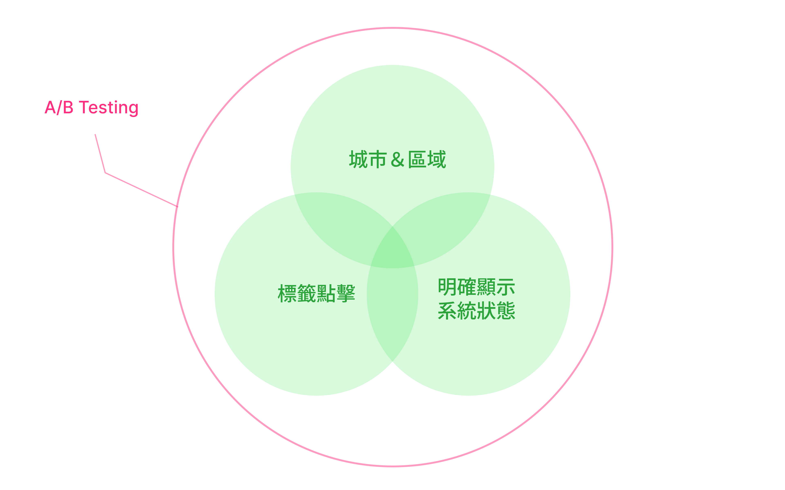
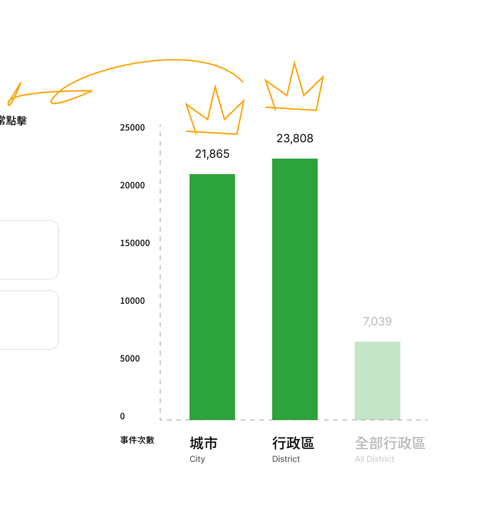
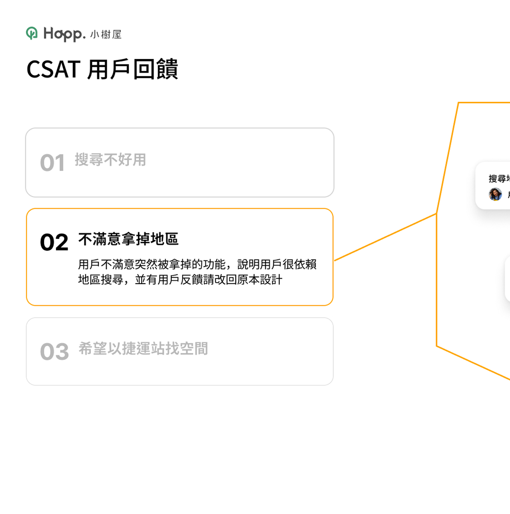
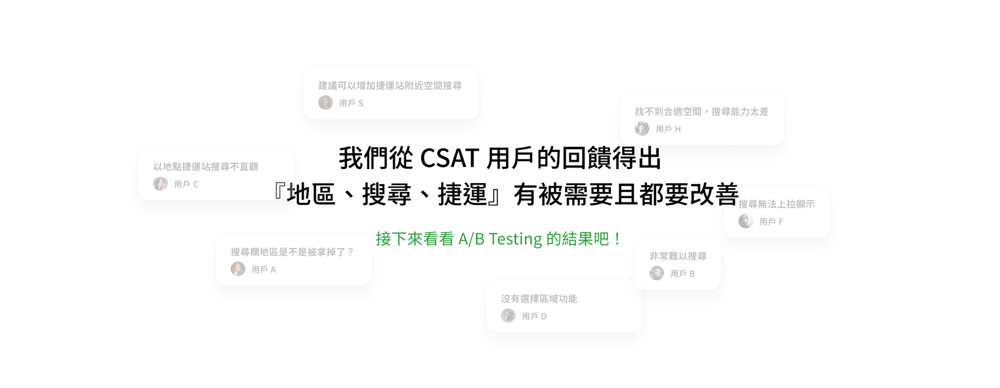

A/B Testing 優化搜尋體驗
主要擔任角色
UXUI Design
負責階段
結構層 → 框架層 → 表現層
合作的團隊角色
主管、RD
花費時間
1～2 個月

關鍵問題
PM 原本在這個期間有個計畫要執行，就是將使用者常點擊的標籤來設計搜尋，但考量只呈現『標籤』給於使用者，會無法快速地找到目標，基於易用性原則的考量，需要遵循『使用者當下需要做什麼？』最終討論執行 A/B Testing 來看使用者的反應來做決定。
- 我們是真的在解決使用者的問題嗎？
- 使用者真的需要這麼多功能嗎？
- 那些功能對於現在高密度的使用有益處？
解決方法
- A 版本：保留城市＆區域選擇，確保使用者有基本的選項
- B 版本：添加所有設備、情境、城市、捷運標籤，讓使用者自由點擊
- 遵循易用性原則：使用者當下需要做什麼？
- 執行 A/B Testing

A/B Testing
我們為期 30 日的兩個版本測試，使用者的明顯反饋是『城市區域、捷運』很重要，透過數據出來結果，最終決定我們的版本。
- A 版本：城市點擊率（21,865）、行政區（23,808）
- B 版本：用戶點擊率（11,200）
＊點擊最多的為『捷運站、城市』



設計過程
改善易用性體驗，在 十項使用者體驗設計優化原則 中，第一則是『明確顯示系統狀態』藉由合理時間和適當回饋，系統應該讓使用者知道現在的狀態是什麼。
第七則是『提供使用時的自由度和效率』產品應該提供自由度來滿足進階和沒有經驗的使用者，提供沒經驗的使用者預定的功能和提供進階使用者所需要的操作。

預設區塊-城市選擇設計
展開搜尋預設主要城市『台北、新北、台南、台中、基隆』讓使用者了解，據點最多幾個大城市。
- UI：視覺化的板塊
- 易用性－連結現實中的認知：台灣地圖的插圖呈現
- 無障礙設計：可點擊操作、可理解的設計
行政區選擇設計
依據重要優先順序排列，城市 > 行政區 > 其他，將次要的選項設計成模組化，使用者要選擇自己所在的區域時，就會看到預設的基本模組，並以 Tab + Chip 的 UI 結合，讓使用能對主要的城市切換不同選項，呈現不同的行政區
- Tab
- Chip
- 一致性、模組化
台北捷運選擇
小樹屋的用戶佔比最多為『台北市』用戶最常反映希望以台北捷運為錨點，習慣以捷運來找空間，因此將『只有在捷運線上小樹屋』提供使用的選擇，以免使用者點擊之後沒有如實呈現
- 台北市用戶最常錨定的目標
- 只提供有空間的選項
搜尋功能
根據『人機介面準則』搜尋功能需要包含幾項原則，當使用者在進行搜尋時，能輕鬆地使用產品功能，大幅減少使用者阻礙
- 搜尋紀錄
- 推薦項目
- 錯誤提示

保留使用者過往搜尋紀錄

搜尋關鍵詞時，推薦相對應的項目

搜尋不正確時，顯示錯誤資訊”